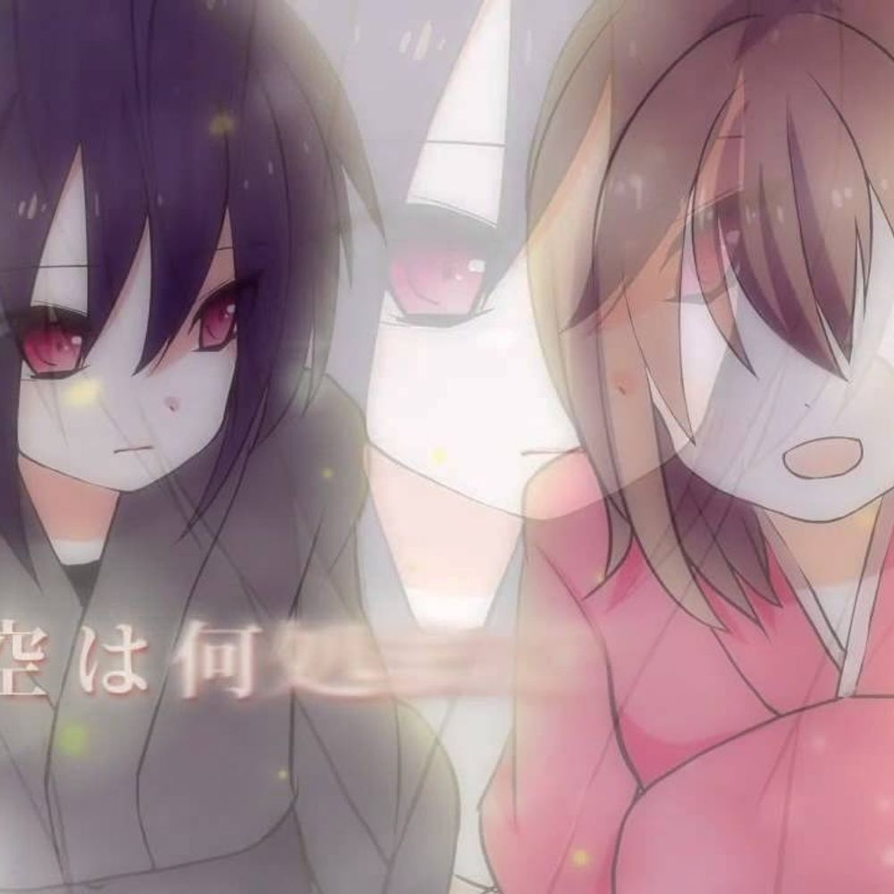

satwahyou.ku
Home
Contact
About
satwahyou.ku adalah website untuk mendengarkan musik anime
Top Rank
Terbaik Maret 2023
mosawo - Kinmokusei
mosawo - Kinmokusei (Dengarkan Online)
sumika - Fiction
sumika - Fiction [Cover Harutya] (Dengarkan Online)

mafumafu - Kyoka Suigetsu
mafumafu - Kyoka Suigetsu (Dengarkan Online)
Anda mungkin mencari
Monthly Top Songs
Terbaik Januari 2023
Terbaik Januari 2023
Terbaik Maret 2023